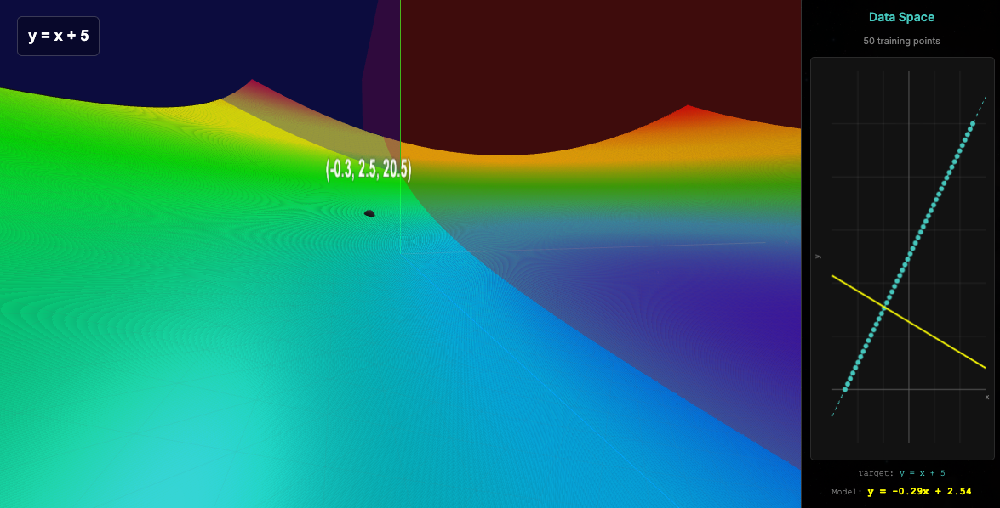
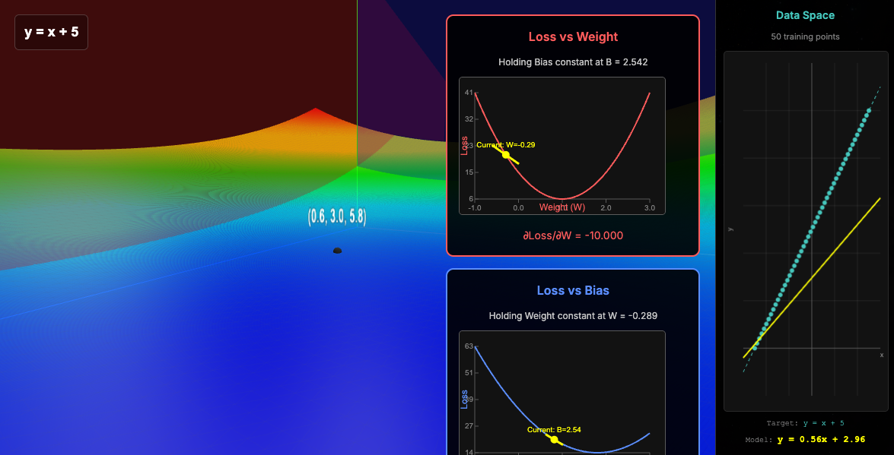

Loss Space vs Data Space
Original Upload: 2025-01-08
Last Updated:
I want to create a blog about the difference in ML between the loss that we are descending down and the actual data we are fitting to, so there are two spaces, and let's not mix them, in fact, let's make this super clear. If we have some dataset, that we assume is separable, that is to say, modelable, it's not totally random, in fact, hopefully it's actually predictable, and we can use a model, our model just finds a decision boundary, and that is in the data space, and in the loss space, what's happening is we are finding iteratively the difference between what our model predicted and what actually should have been, and we iteratively 'descend' down this path to a global minimum, i.e., minimizing our loss, the difference between the actual and the predicted. Make sense? Let's see it in action.
So we will be using the interactive-lr for this demonstration. Which exemplifies this concept beautifully and was created to provide intuition into gradient descent.
So, see in this image the left side is the loss space, and the right side is the data space. In the loss space, is just the complete list of parameters and their respective loss. In this case we have just 2 parameters, and the z axis is the loss, that means the set of combinations and the resulting loss create this shape, and the global minimum of it is what we are after!

Why don't we just create an image for each set of ML problem, visually identify the global minimum and use those parameters!! lol. For many reasons, but I love that you asked the question.
- That would take forever, computationally expensive
- Most problems have multiple parameters, and we can only visualize 2 parameters at once.
- Gradient descent finds the most optimal global minimum anyways!
Anyways, see in the image that we have initialized 2 values, -0.3 for the x and 2.5 for b (the y intercept), and the 20.5 is the resulting loss. y = mx+b, plug those numbers in, get the loss, subtract it from the actual value of the input at that point, and that is your loss. Oh wait. Stop!
What?
We are here taking the set of all training points at once lol, and then we compute the average loss, and use that in our gradient calculation. Such luxury doesn't exist in the real world, because you cannot just take the average of 500k points at the same time.
Notice our initial slope.
Now, let's look at a single iteration of gradient descent and the update.

Please now notice that in our data space, the parameters updated now reveal how our model now better fits the training data, and in the loss, we have moved closer to that minimum. I would recommend you to mess around with this to gain an intuition about this and the discrepancy between these two spaces! The one that we are trying to map our model to the training, and the other one is the space that visualizes the relationship of the parameters and how well they fit the data.